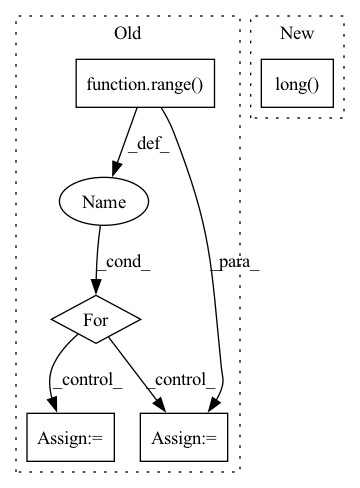

Pattern ID :32580
Before Change
total_greedy_list = list(np.array(total_greedy_list)[rand_indices])
gammas = list(np.array(gammas)[rand_indices])
elif self.selection_type == "Supervised":
for i in range( self.num_classes):
if i == 0:
idxs = torch.where(labels == i)[0]
N = len(idxs)
self.compute_score(model_params, idxs)
row = idxs.repeat_interleave(N)
col = idxs.repeat(N)
data = self.dist_mat.flatten()
else:
idxs = torch.where(labels == i)[0]
N = len(idxs)
self.compute_score(model_params, idxs)
row = torch.cat((row, idxs.repeat_interleave(N)), dim=0)
col = torch.cat((col, idxs.repeat(N)), dim=0)
data = np.concatenate([data, self.dist_mat.flatten()], axis=0)
sparse_simmat = csr_matrix((data, (row.numpy(), col.numpy())), shape=(self.N_trn, self.N_trn))
self.dist_mat = sparse_simmat
fl = apricot.functions.facilityLocation.FacilityLocationSelection(random_state=0, metric="precomputed",After Change
total_greedy_list = list(np.array(total_greedy_list)[rand_indices])
gammas = list(np.array(gammas)[rand_indices])
elif self.selection_type == "Supervised":
idxs = torch.arange(0, self.N_trn).long()
N = len(idxs)
self.compute_score(model_params, idxs)
row = idxs.repeat_interleave(N)
col = idxs.repeat(N)In pattern: SUPERPATTERN
Frequency: 3
Non-data size: 5
Instances Fragment ID: 94782342
Project Name: decile-team/cords
Commit Name: 0b9fa0d7a62b59ab3d740399460db130d1d933ad
Time: 2021-11-10
Author: krishnateja.killamsetty@utdallas.edu
File Name: cords/selectionstrategies/SL/craigstrategy.py
M Class Name: CRAIGStrategy
N Class Name: CRAIGStrategy
M Method Name: select(3)
N Method Name: select(3)
M Parent Class: DataSelectionStrategy
N Parent Class: DataSelectionStrategy
M File Name: cords/selectionstrategies/SL/craigstrategy.py
N File Name: cords/selectionstrategies/SL/craigstrategy.py
M Start Line: 276
M End Line: 291
N Start Line: 276
N End Line: 281
Before Change
matching_matrix[pppppp] = mmm
print()
// 对每个gt，取cost最小的k个候选正样本去学习。
for gt_idx in range( num_gt):
_, pos_idx = torch.topk(cost[gt_idx], k=dynamic_ks[gt_idx], largest=False)
matching_matrix[gt_idx][pos_idx] = 1
del topk_ious, dynamic_ks, pos_idx
// [M, ] M个候选正样本匹配的gt数After Change
// 对每个gt，取cost最小的k个候选正样本去学习。
max_k = dynamic_ks.max()
masks = torch.ones((max_k, max_k), dtype=torch.uint8, device=cost.device).tril(diagonal=0)
fill_value = masks[(dynamic_ks - 1).long() , :]
_, pos_idx = torch.topk(cost, k=max_k, largest=False)
M = cost.shape[1]
offset = torch.arange(start=0, end=M*num_gt, step=M, dtype=torch.int64, device=cost.device).unsqueeze(-1) Fragment ID: 94782337
Project Name: miemie2013/miemiedetection
Commit Name: 43dd136f727776fe4f3474de2de9675c0617c409
Time: 2023-05-08
Author: 53960695+miemie2013@users.noreply.github.com
File Name: test_code/test2_YOLOX_simota_matching.py
M Class Name: AnonimousClass
N Class Name: AnonimousClass
M Method Name: simota_matching2(3)
N Method Name: simota_matching2(3)
M Parent Class:
N Parent Class:
M File Name: test_code/test2_YOLOX_simota_matching.py
N File Name: test_code/test2_YOLOX_simota_matching.py
M Start Line: 52
M End Line: 89
N Start Line: 52
N End Line: 69
Before Change
device=samples.device,
dtype=samples.dtype,
)
for sample_idx in range( context.num_samples):
// Get correct repetition
r = context.repetition_indices[sample_idx]
// Get correct parent_indices
parent_indices_out = parent_indices[sample_idx]
// Get scope for the current repetition
scope = self.scopes[:, :, r]
// Turn one-hot encoded in-feature -> out-feature mapping into a linear index
rnge_in = torch.arange(self.out_features, device=samples.device)
scope = (scope * rnge_in).sum(-1).long()
// Map parent_indices from original "out_features" view to "in_feautres" view
parent_indices_in = parent_indices_out[scope]
// Access base leaf samples based on
rnge_out = torch.arange(self.in_features, device=samples.device)After Change
scopes = self.scopes[..., context.indices_repetition].permute(2, 0, 1)
rnge_in = torch.arange(self.num_features_out, device=samples.device)
scopes = (scopes * rnge_in).sum(-1).long()
indices_in_gather = indices_out.gather(dim=1, index=scopes)
// assert (indices_in_tmp == indices_in_gather).all()
Fragment ID: 94782348
Project Name: braun-steven/simple-einet
Commit Name: e657fc668bd0f87f5e622a8b2549cd9e8ade437a
Time: 2022-01-11
Author: steven.lang.mz@gmail.com
File Name: simple_einet/factorized_leaf_layer.py
M Class Name: FactorizedLeaf
N Class Name: FactorizedLeaf
M Method Name: sample(3)
N Method Name: sample(3)
M Parent Class: AbstractLayer
N Parent Class: AbstractLayer
M File Name: simple_einet/factorized_leaf_layer.py
N File Name: simple_einet/factorized_leaf_layer.py
M Start Line: 63
M End Line: 120
N Start Line: 68
N End Line: 147